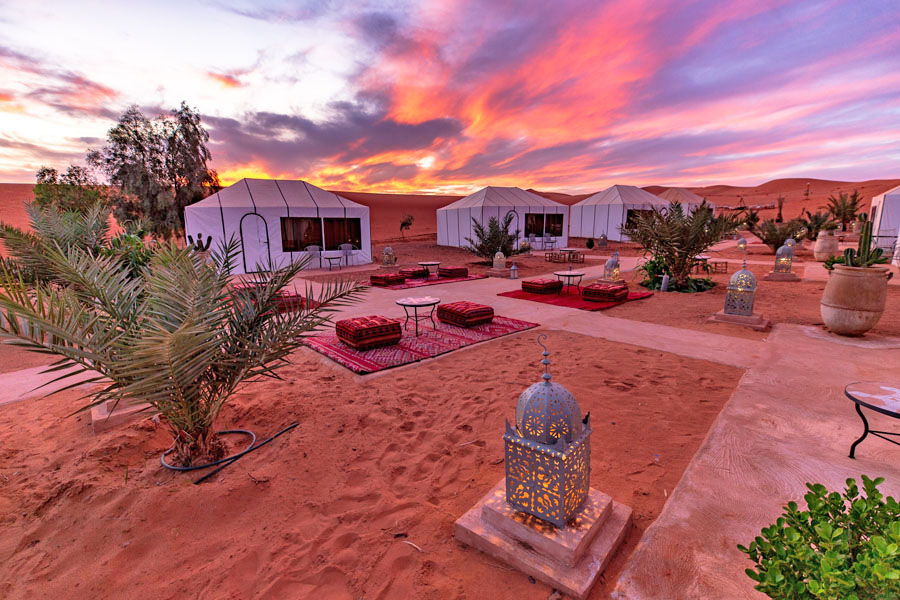
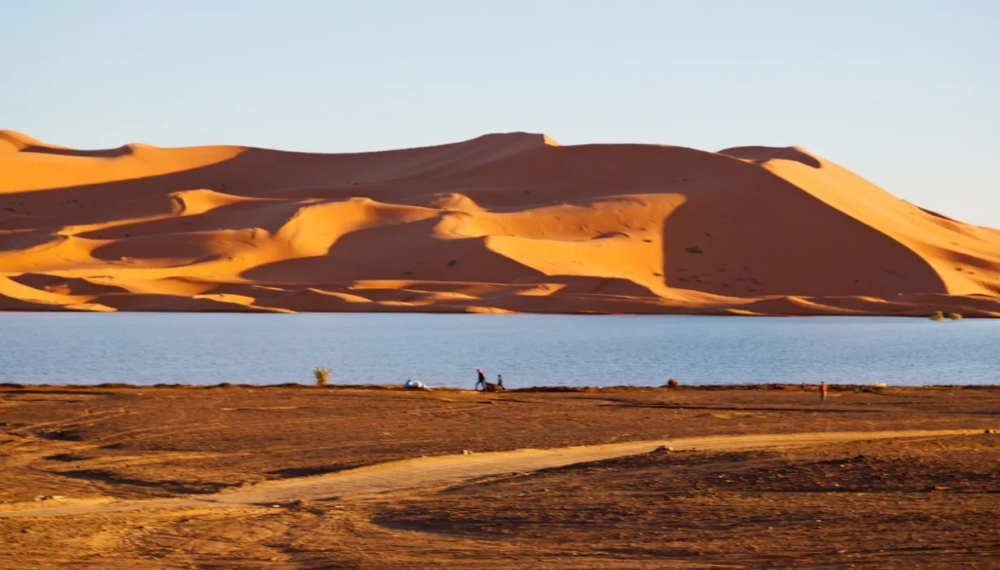
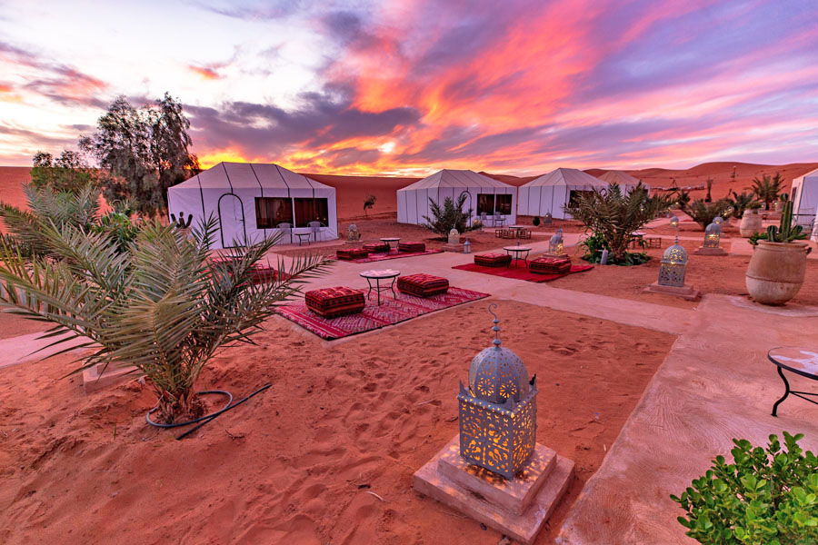
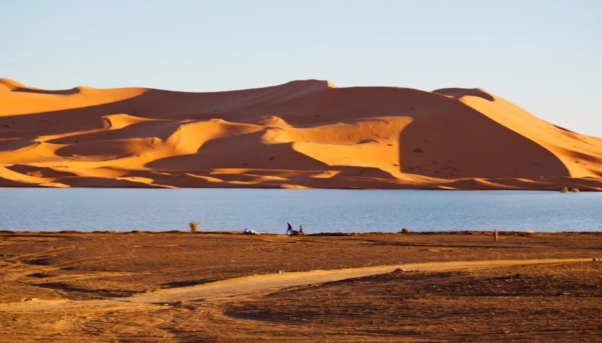

Merzouga : L'appel du Sahara.
 



Glissez pour voir plus de photos ↔
Pourquoi choisir Merzouga ?
Une expérience unique au pied des dunes de l'Erg Chebbi. Admirez des couchers de soleil inoubliables et passez une nuit sous les étoiles dans un bivouac traditionnel.
Taux de visite : + de 50 000 visites par an
À découvrir sur place
- Randonnée en dromadaire : Traversez les dunes dorées de l'Erg Chebbi au rythme des caravanes pour rejoindre votre campement et admirer un coucher de soleil unique au monde.
- Nuit en Bivouac sous les étoiles : Dormez dans une tente berbère traditionnelle ou à la belle étoile, profitez d'un dîner autour du feu et de la musique locale Gnaoua.
- Le Lac Dayet Srji : Au printemps, ce lac salé apparaît au milieu du désert et attire de nombreux flamants roses, offrant un contraste saisissant avec les dunes oranges.